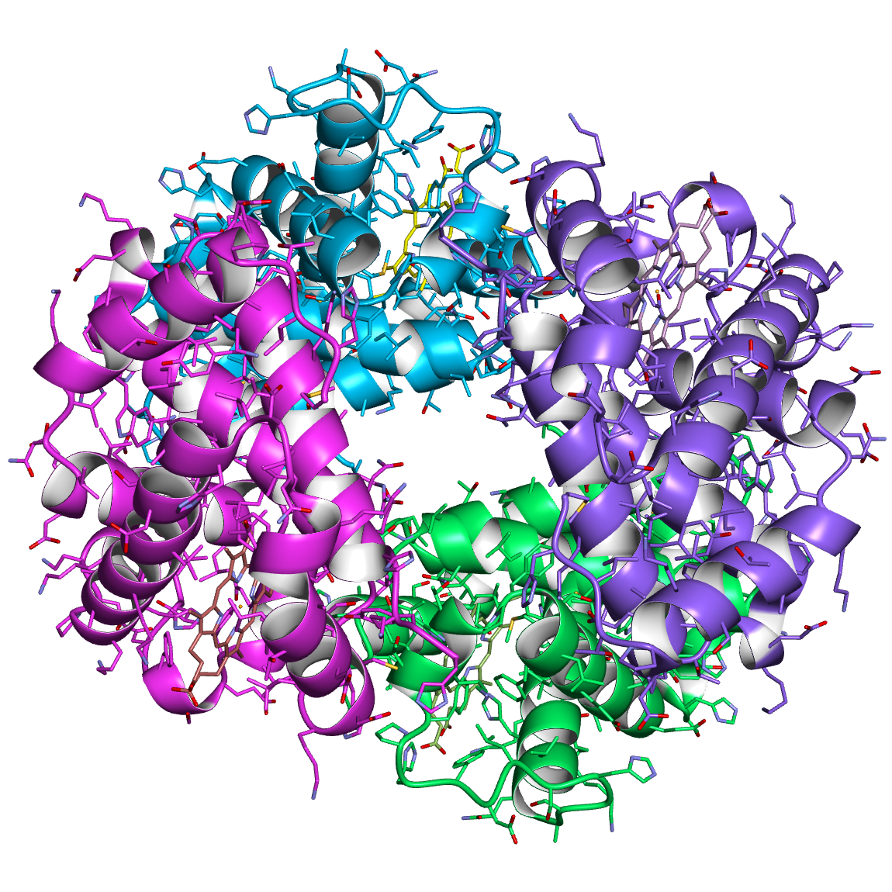

Try one of my programs for bio-data analysis.
|  | If you are interested in the biologocal-data analyse tools that have been built by me, you can try one of them here! : A simple and small program which calculates the longest distance among α-carbon atoms in amino acid residues of a protein crystallographic structure. |
File input
Result
Distance :
Residue 1 :
Residue 2 :
KETER